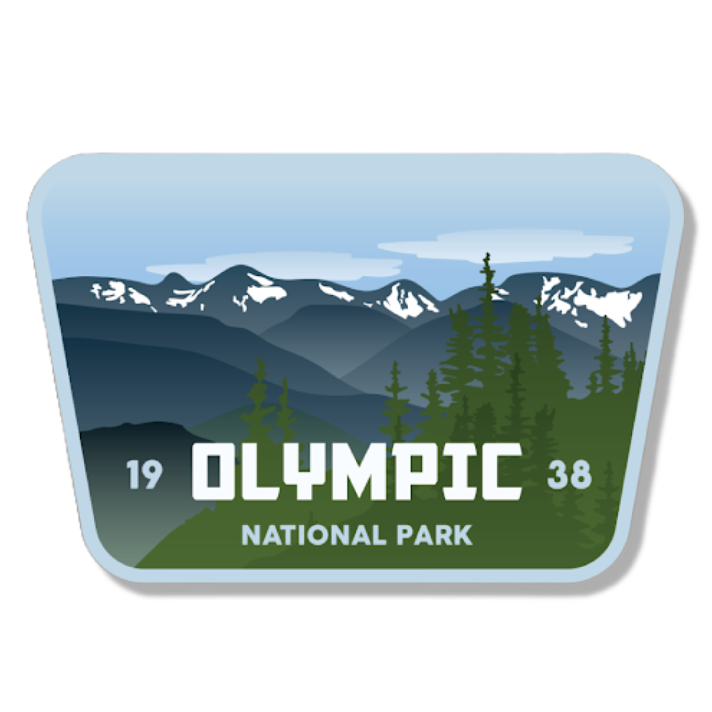

Hi There! 👋
My name is Kai Davey, and I am a student currently dual-enrolled at Roosevelt High School and Bellevue College. I am passionate about 💻 software design, 📱 UI/UX design, and 🎨 digital art!
Fun Fact
I LOVE going outdoors! You will often catch me spending my weekends 🏃 running, 🧗♂️ rock climbing, 🥾 hiking, and 🎒 backpacking. My favorite running route in Seattle is from my school to the Fremont Troll. It is roughly 7.3 miles in total.
Goals
I have plans to attend a 4-year college next year. Currently, I am knee-deep in the process of figuring out which college to go to, but in about a month, I will have decided. In college, my goals are to pursue a Computer Science degree with a specialization in design and interface. I also hope to travel abroad to Singapore to improve my Chinese!